How to make itZo maak je het
Used inGebruikt in
 Aanmaakblokje
Aanmaakblokje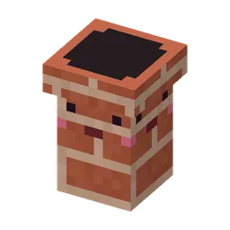
Knabbelschoorsteentje Blok kaasknabbels
Blok kaasknabbels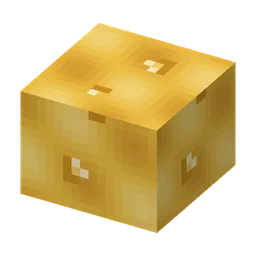
Borrelende kaassaus Diamanten guhpantser
Diamanten guhpantser Guh-molentje
Guh-molentje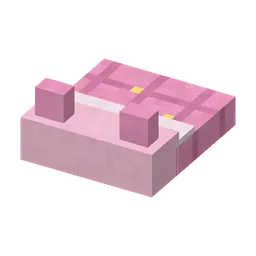
Guh-slaapzak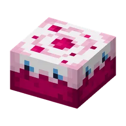
Guhtaart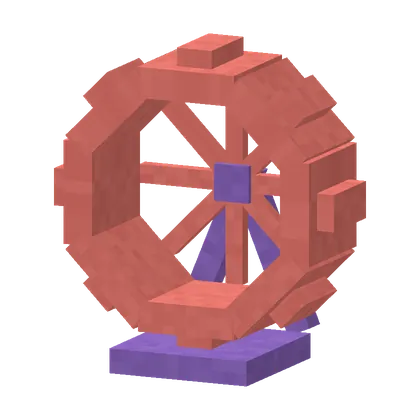
Guhrad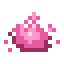
Guhdraad Guhbel
Guhbel Guhdex
Guhdex") Guhhuisje (klein)
Guhhuisje (klein) Guhnestje
Guhnestje") Haarverf (citroen)
Haarverf (citroen)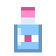
Haarverf (hemelsblauw)") Haarverf (lavendel)
Haarverf (lavendel)") Haarverf (mint)
Haarverf (mint)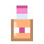
Haarverf (perzik)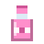
Haarverf (roze)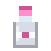
Haarverf (zilver) IJzeren guhpantser
IJzeren guhpantser Kaasfondguh
Kaasfondguh Vahoege kaasknabbelshake
Vahoege kaasknabbelshake Kaasknabbelsaté
Kaasknabbelsaté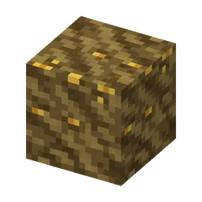
Kaasmodder Gloeiend kaasmos
Gloeiend kaasmos Guhlampje
Guhlampje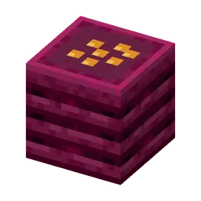
Knabbelbak Knabbelbal
Knabbelbal Knabbelbessentaartje
Knabbelbessentaartje Knabbelkorf
Knabbelkorf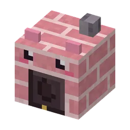
Knabbeloven Knabbelvoer
Knabbelvoer Knabbelzaadjes
Knabbelzaadjes Badeendje
Badeendje Roze badschuim
Roze badschuim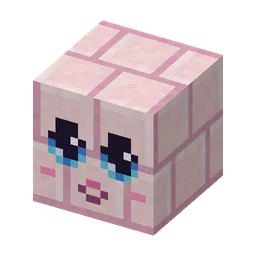
Guhgezichtje in knuffelsteen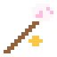
Marshmallowknabbel Oog van Vadsig
Oog van Vadsig Reisguh-fluitje
Reisguh-fluitje Sneeuwguhkopje
Sneeuwguhkopje Stille knabbel
Stille knabbel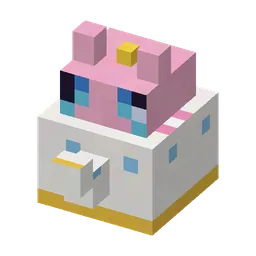
Theepotje Guhgezichtje in de schors
Guhgezichtje in de schors Liedjesboekje
Liedjesboekje Wolkensuikerspin
Wolkensuikerspin
Found in chestsIn schatkisten
- Ballonfestival
- Barbecueput
- Boomhutdorp
- Huis van Boze Mika
- Mika-grillpaleis
- Guh-picknick
- Guh-Sterrenwacht
- Guhbibliotheek
- Guhboerderij
- Hamsterhuis
- Het Hemelkapelletje
- Kaasknabbel-nest
- Kampeerplekje
- Knabbelkelder
- Knabbel treasure (Guheinde)Knabbelschat (Guheinde)
- Knabbel raftKnabbelvlotje
- Paalhut van de Moerasheks
- Guhbubbel
- Spiesburcht
- Stille Voorraadkelder
- Zwevende guh-eilandjes